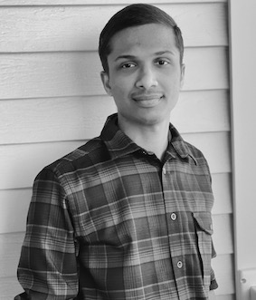

I am a Research Assistant Professor at the Department of Electrical and Computer Engineering (ECpE), Iowa State University (ISU), USA and affiliated with the Center for Wireless, Communities, and Innovation (WiCI). My primary focus is on the project ARA: Wireless Living Lab for Smart and Connected Rural Communities [Part of the NSF Platforms for Advanced Wireless Research (PAWR) program] under the mentorship of Prof. Hongwei Zhang.
Prior to joining ISU, I completed my PhD at the Indian Institute of Space Science and Technology (IIST), India, in 2021 under the guidance of Prof. B. S. Manoj. I obtained my master's and bachelor's degrees from the National Institute of Technology, Calicut (NITC) and Mahatma Gandhi University (MGU), India, respectively.
Broadly, my research interests lie in the design and development of next generation wireless infrastructures.